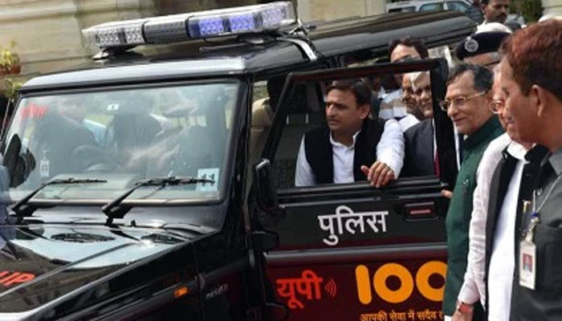
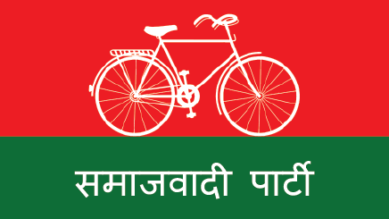
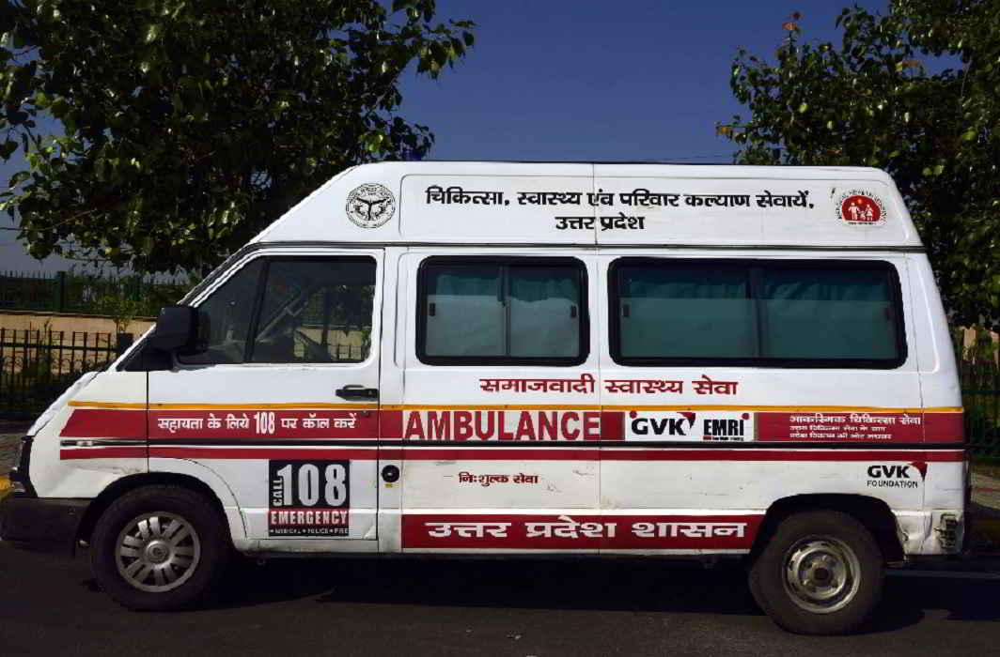
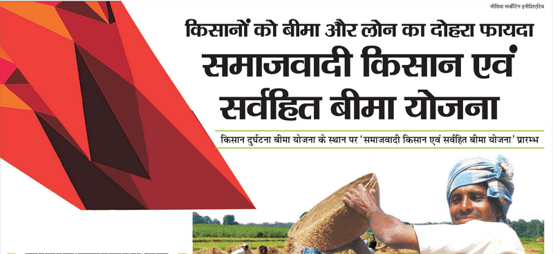

A Tribute Page - Akhilesh Yadav
Akhilesh Yadav is an Indian politician and national president of the Samajwadi Party
Akhilesh Yadav is an Indian politician and national president of the Samajwadi Party who served as the 20th Chief Minister of Uttar Pradesh.
Having assumed the chief minister's office on 15 March 2012 at the age of 38, he is the youngest person to have held the office till date.
अखिलेश यादव बोल रहा हूँ
DEVELOPMENT UNDER THE LEADERSHIP OF SHRI AKHILESH YADAV
- 1090 Women Power Line
- The 1090 women’s helpline was launched by Chief Minister Akhilesh Yadav in 2012 as a means to take realtime action in making women feel safe, as well as promoting and empowering people in society to find a solution to the social ills facing women. The helpline number is a one-state-one-number service that was set up to handle cases of sexual harassment. Women in Uttar Pradesh can access the helpline from anywhere in the state and lodge complaints against those who harass them. The complainant need not physically go to the police station to file an FIR, and the identity of the complainant is kept secret.
- Lucknow Metro
- Under Chief Minister Akhilesh Yadav, the state gave clearance for the construction of Lucknow Metro in June 2013, after the concept was first proposed by the Lucknow Metro Rail Corporation (LMRC) to the government of Uttar Pradesh in September 2008. Construction of Lucknow Metro began on 27th September 2014, with 8.3 kilometres between Transport Nagar and Charbagh Railway Station. It began commercial operations on 5th September 2017, making it the fastest built Metro in the country.
- Agra-Lucknow Expressway
- The Agra-Lucknow Expressway is a 6-lane expressway, expandable to 8 lanes. The project was developed by the state government of Uttar Pradesh under the leadership of Chief Minister Akhilesh Yadav. The project is a 302 kilometre tolled controlled-access highway or expressway, undertaken by the Uttar Pradesh Expressways Industrial Development Authority. The expressway reduced the distance between the cities of Agra and Lucknow. The Agra-Lucknow Expressway was completed and inaugurated by Akhilesh Yadav as CM on 21st November 2016. This project serves as the flagship model of development in the state, being the first project of its kind to be completed in the shortest span of time, between June 2014 and November 2016.
- Developing Power Sector
- In December 2016, Chief Minister Akhilesh Yadav laid the foundation stones and inaugurated power projects worth Rs. 52,437 crores. The projects cover all three aspects of power generation, transmission and distribution. The projects included three thermal power plants with a total capacity of 33,000 MegaWatts, to be constructed in the state. The Jawaharpur Thermal Power Plant, a Greenfield project, would have a generation capacity of 1,320 MegaWatts. The project is being built at a cost of Rs.10,566 crores. Two other projects; the Obra C Power Project is at Rs. 10,416 crores and the Hardauganj Extension is at Rs. 574 crores.
- Modernising Police Force 
- Kamdhenu Yojana 
- Kisan Avam Sarvhit Bima Yojana 
- Lohiya Awas Yojana 